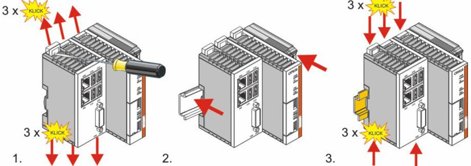
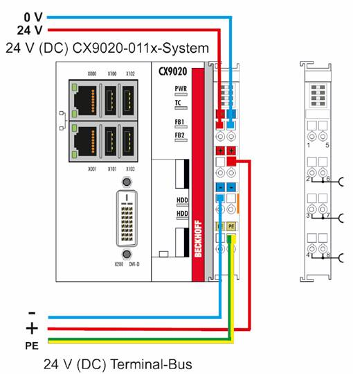
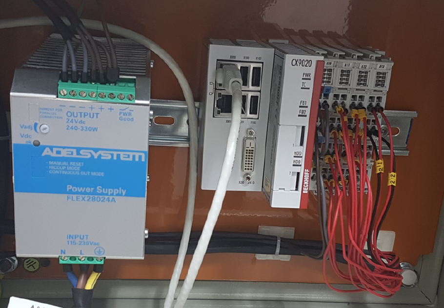
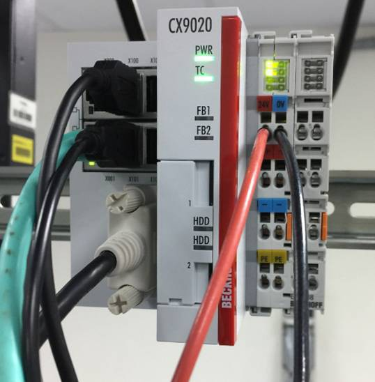
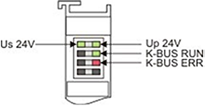

Installation of the PSU (SCADA) -
Adelsystem flex28024a 24V DC.
-
Install the Power Supply
Unit (PSU) on the mounting rail (see Figure
1).
Figure 1.
Installation of the PSU and CPU

-
Position the PSU on the mounting rail.
-
Insert the bar clips on the top side and the
underside.
-
Apply pressure to the bar clips, until the PSU moves into
position with a click.
-
When the PSU
and CPU are installed, make sure the correct cables
are connected to the related devices (see Figure
2).
Figure 2. 24V
(DC) Terminal-Bus

-
After the installation check, if the two upper LEDs in the
terminal prism are green (see Figure
3 and Figure 4).
The two upper LEDs turn green, when the
PSU is connected correctly
(see
Figure
5).
The left LEDs show the CPU supply.
Red LEDs shows the terminal supply.
The other LEDs show the terminal bus status.
Figure 3. Scada
system setup with LEDs

Figure 4. SCX9020
cables

Figure 5. LED
schema
